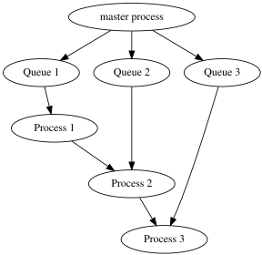
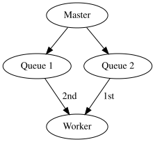

2021-06-30
A Reduce(), commonly known as a fold, is a computational operation evaluating a binary operation sequentially along a container of objects [1]. For example, in the case of a + operation over a list of values drawn from ℝ, it is equivalent to a cumulative sum. The Reduce() is provided in the base R distribution as part of the funprog group of common higher-order functions. It serves as a standard means of performing a rolling operation over some container without resorting to explicit looping. The functional programming paradigm in turn makes heavy use of Reduce() for the succinct encapsulation of the concept. The Reduce referred to in the MapReduce paradigm is a similar, though distinct, operation, serving closer to a grouped summary [2]. The MapReduce is thus able to stay largely embarrassingly parallel, while a Reduce() is necessarily serial.
To create a distributed reduce using the largeScaleR system is actually mostly solved by the design of distributed objects, which can be passed to the existing Reduce() function as provided in base R, with no further modification. The only additional effort is to ensure that the operant binary function is capable of operating on distributed objects. This can be guaranteed by making use of a dreducable() wrapper functional around a regular function, which returns the original function modified to operate in distributed fashion. The source code demonstrating this is given in lst. 1.
Listing 1: The wrapper functional providing a distributed reduce showing the very little effort required to generate a distributed reduce from the framework
dreduce <- function(f, x, init, right = FALSE, accumulate = FALSE, ...) {
Reduce(dreducable(f, ...), chunkRef(x), init, right, accumulate)
}
dreducable <- function(f, ...) {
function(x, y) {
do.ccall(f, list(x, y), target = y, ...)
}
}The dreducable() function is itself a simple wrapper around the do.ccall() function that serves to power all of the largeScaleR distributed object operation requests.
The program flow of a standard distributed reduce is depicted in fig. 1.

Assuming a distributed object split consecutively over processes 1, 2, and 3, with a single master node containing the reference to this object, a distributed reduce takes place as follows:
The applications for a distributed reduce correspond closely to those of a regular reduce. Any “rolling” or windowed function that bases it’s state on some form of previous elements in a list is able to take clear representation through a distributed reduce.
Of particular interest are updating modelling functions. Representative of this class of statistical algorithm is biglm, with an eponymously named package available in R. A prototype distributed linear model making use of both the biglm and largeScaleR packages is described in detail in the distributed linear model document.
Though serving as a powerful high-level construct, it is hindered at present by the current state of the largeScaleR mechanism of managing unresolved references. As it currently stands, when a process receives a request from a queue involving a reference that has not yet been computed (unresolved), it sits and blocks until that the chunk has been resolved. A very simple race condition emerges when the process has two requests simultaneously, one dependent on another, and pops the request with dependency. This request can never be serviced, as it will block, thereby never allowing the request providing the dependency to run. Such a race condition manifests in a distributed reduce if a process holds two or more chunks to be reduced over – there is a single line of dependence between them and their resultant chunks. Furthermore, as the nature of popping from multiple queues is for all intents random, such a race condition is non-deterministic and difficult to reproduce. lst. 2 gives a setup where roughly half the time a race condition as described occurs, and the program hangs until forced termination, with illustration provided in fig. 2.
Listing 2: Example potential for a race condition in the distributed reduce
library(largeScaleR)
start(workers=1)
chunks <- distribute(1:2, 2)
dreduce("sum", chunks)
Solutions to such a problem are forthcoming, with the chosen solution likely serving as a key architectural component.